A multilingual check-in kiosk, phone check-in and live queue for crowded government OPDs: the patient's history is ready, in English, before they reach the doctor.
Everything in one place: what the system does, how a visit flows through it, every question it asks, the OPD card, every screen and who uses it, the AI and its limits, the technology, how it was tested, what was built when, and how to run the demo.
main, pull request #74). Screenshots come from the application with fictional patients; older ones show the earlier logo. Source: docs/complete-guide/guide.html.Government OPDs see hundreds of patients a morning. Patients speak different languages, describe problems in their own words and wait without knowing their turn; doctors get a few minutes each and spend much of it collecting basic history.
| Who | Where | What they do there |
|---|---|---|
| Patient | Kiosk, or a QR poster on their own phone | Chooses Hindi, Marathi or English; agrees; says who is answering; gives age and sex; uses an OPD card if they have one; flags danger signs; answers; adds photos of old papers; confirms the read-back; gets a token, QR and OPD card. |
| Patient's phone | QR on the token | Live place in line, wait range and progress in their language; can stop AI help or SMS; reads the privacy notice. No app, no login. |
| Nurse | Queue, Patients | Watches the queue and alerts, calls and recalls patients, confirms danger signs and departments, links returning patients, re-issues lost OPD cards, checks in patients who need help. |
| Doctor | Queue, Consultations | Calls the next patient, checks the AI draft against its sources, reads earlier visits and old papers, corrects the history, writes their own notes, prints the PDF. |
| Administrator | Reports, Settings, Audit log, System | Runs staff accounts, kiosks, phone QRs, departments and hospital-wide switches; reads reports and the audit log; checks the installation's health. |
Kiosk, phone, status page, staff screens, notices and printed forms in Hindi, Marathi and English.
Each patient sees 8–15 of them, chosen by the complaint, after six danger-sign buttons (page 5).
History-taking and the queue only, on every screen, in every output and in every AI answer.
What the patient and staff see at each step, and what the system does behind the screen. Every step works on the hospital's own server; AI and SMS are optional extras.
| Step | What the person sees and does | What the system does |
|---|---|---|
| 1Arrive | Walks up to a kiosk, or scans the waiting-hall QR poster with their own phone. | The kiosk was paired once with a one-time activation code and signs itself in. The phone QR is rate-limited (6 check-ins per phone and 150 per poster in 10 minutes) and can be replaced at once. |
| 2Consent | Chooses Hindi, Marathi or English; hears the care notice and agrees; says who is answering; decides separately about online AI help (and SMS, when the hospital has it). | Nothing is collected before consent. Each purpose (care, AI, SMS) is its own record, audited and withdrawable. |
| 3Details | Age and sex; a phone number is optional. A returning patient types the OPD number and PIN from their last slip. | The phone number is encrypted. The OPD card must fit today's age and sex; wrong tries are limited and audited; the visit is linked to the patient's record. |
| 4Safety | Six danger-sign buttons come before any question. | One tap marks the visit urgent and pushes an alert to every staff board within a second (Redis publish, then WebSocket). |
| 5Interview | 8–15 questions, each answered by a tap, by speaking or by typing. | The question engine picks topics from the complaint (keywords, at most two) and applies age and sex rules. Speech goes to Sarvam. 15 red-flag rules check every answer. With AI consent, Gemini may add up to three labelled follow-ups. |
| 6Review | Hears the history read back, changes any answer, adds photos of old papers, confirms. | The read-back comes from fixed templates, never a language model. The English case sheet is built from the bilingual question bank; AI translates free text only with consent. Photos are stored encrypted. |
| 7Token | Gets the token (MED-016), department, place in line, a QR for the phone and the OPD card. | Rules compute the triage score (0–100) and the department. Tokens are numbered per department and day. Urgent patients go first; others get a head start of up to 45 minutes. |
| 8Waiting | The phone shows people ahead and a wait range, and vibrates when the patient is called. | Every queue change is written to an outbox in the database; the worker relays it to Redis every 2 seconds, and boards and status pages update live. |
| 9Nurse | Sees the live board, acknowledges alerts, confirms danger signs, calls and recalls patients. | A call reserves the patient for one doctor; a missed call gets a grace period before "absent". Every view and change goes to the append-only audit log. |
| 10Doctor | Opens the case sheet, checks the AI draft against its sources, reads earlier visits and papers, writes notes, prints the PDF. | Case sheets and notes are versioned, so two people cannot overwrite each other. The output guard blocks any AI text that diagnoses or advises. WeasyPrint makes the PDF. |
| 11Reports | The administrator sees visits, waits, urgency, languages and how often the kiosk history was right. | The worker recounts today and yesterday every 5 minutes and every day at 03:07. Yesterday's unfinished visits close themselves after midnight. |
The kiosk keeps an encrypted short form and sends it once the network is back; the history still builds from rules.
Tapping, typing, recorded voice prompts, the rules engine and the bilingual question bank do the whole visit (page 13).
The printed paper fallback pack (forms in three languages, a token roll) keeps the OPD going.
A touch-screen kiosk (any tablet or PC with Chrome or Edge) or the patient's own phone. Six steps show at the top of every screen: Agree → Details → Safety check → Questions → Review → Token.
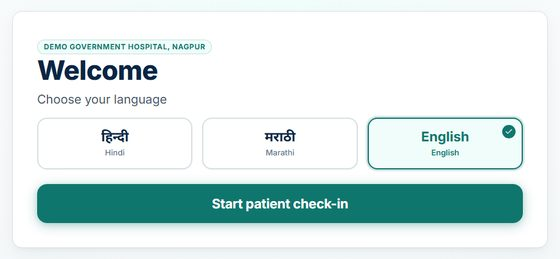
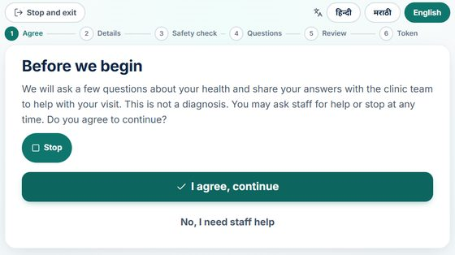
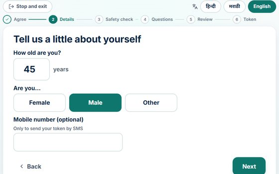
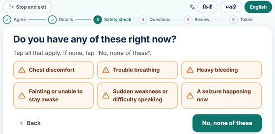
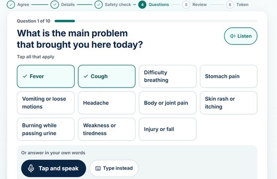
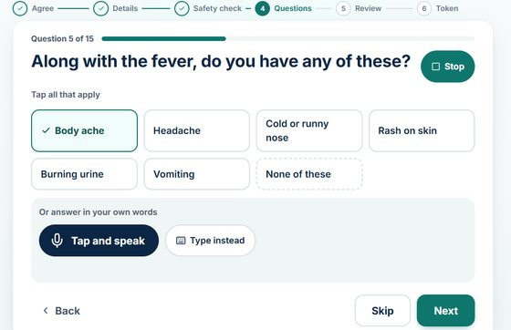
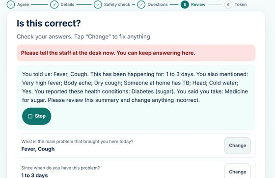
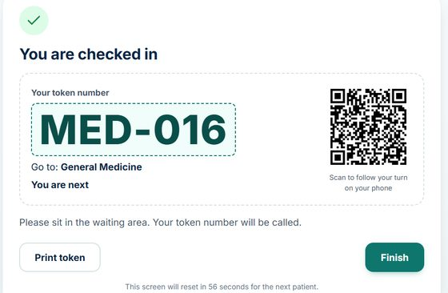
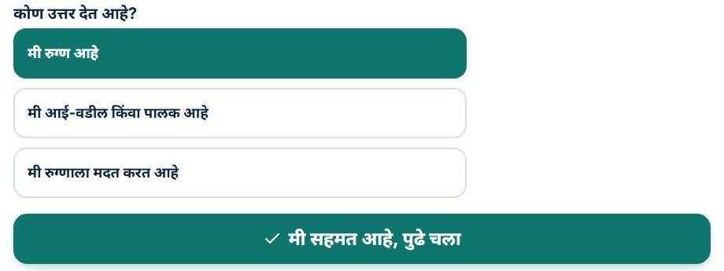
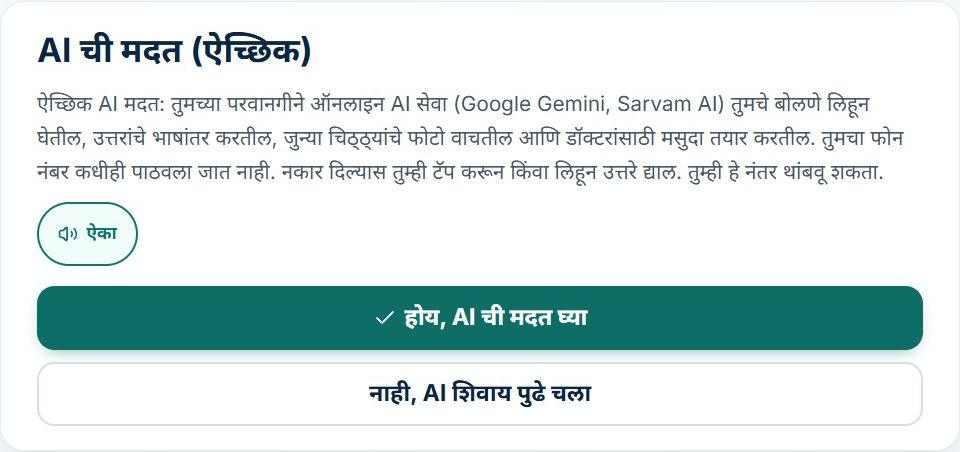
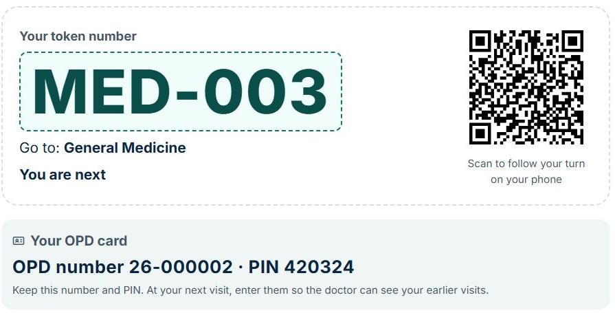
Voice guidance, buttons of at least 64 px, larger text and high contrast; Call staff on every screen; Back and Stop at any time. An idle kiosk warns, then clears itself after 60 seconds.
"Don't know" and "Prefer not to say" stay open questions, never a "no". Voice keeps the patient's own words beside the English, with how sure the speech recognition was.
The poster QR opens these screens on the patient's phone, with the same consent, safety rules and token; a reload or lost Wi-Fi resumes the same question.
33 questions in 16 topics, each in Hindi, Marathi and English with one-tap answers, and open to speech or typing. A patient sees 8–15: the core three, up to two topics chosen from the complaint, and the background topics.
Chest discomfort · Trouble breathing · Heavy bleeding · Fainting or unable to stay awake · Sudden weakness or difficulty speaking · A seizure happening now. Any tap makes the visit urgent and alerts the staff.
| Always: the core three | |
|---|---|
| Main problem | What is the main problem that brought you here today? Fever, cough, difficulty breathing, stomach pain, vomiting or loose motions, headache, body or joint pain, skin rash or itching, burning while passing urine, weakness or tiredness, injury or fall — or in their own words. |
| Since when | Since when do you have this problem? Since today · 1–3 days · 4–7 days · 1–4 weeks · more than a month. |
| How bad | How bad is it right now? 0 means not at all, 10 means the worst. (Adds at most 4 points to the triage score.) |
| Topic (when the complaint mentions…) | Questions (at most two topics a visit) |
|---|---|
| Fever fever, temperature | How is the fever? · Along with the fever, do you have any of these? (body ache, headache, cold, rash, burning urine, vomiting) |
| Cough, breathing breath, cough, wheeze, phlegm | Tell us about the cough or breathing. · Do any of these apply to you? (TB at home, asthma before, smoke, losing weight) |
| Stomach stomach, belly, vomit, loose motion, acidity | Do you have any of these stomach problems? · Do you have stomach pain? If yes, where? |
| Urine urine | Which of these do you have when passing urine? · Do you also have any of these? (fever, side pain, swelling of feet or face) |
| Pain pain, ache, sore, headache | Where is the pain? (skipped when stomach pain or headache is the only complaint) · What is the pain like? |
| Skin skin, rash, itch | What do you notice on your skin? · Where on the body is it? |
| Injury injury, fall, accident, fracture, sprain, bite | How did it happen? · Since it happened, do you have any of these? (cannot walk or lift, swelling, bleeding) |
| Tiredness tired, weak, fatigue, sleep, dizzy | Have you noticed any of these? (tired all the time, weight loss, poor sleep, dizziness, night sweats, feeling low) |
| Background (everyone) | Question |
|---|---|
| Long-term illness | Do you have any long-term illness? (diabetes, high BP, heart disease, asthma, TB, thyroid) |
| Operations | Have you ever had an operation? (caesarean, appendix, hernia, gallbladder, cataract, bone or joint, other) |
| Pregnancy | Are you pregnant now? Only asked from 12 to 50 years, and not of men. |
| Medicines | Do you take any medicines regularly? You can also say their names. |
| Allergies | Are you allergic to any medicine or food? |
| Family | Does anyone in your family have any of these? (diabetes, high BP, heart disease, TB, cancer) |
| Habits | Do you use any of these? (smoking, chewing tobacco or gutkha, alcohol) — from 12 years. |
| Anything else | Is there anything else you want the doctor to know? |
| Switched on by the hospital | Questions |
|---|---|
| Review of systems | In the last month, have you had any of these? Tap all that apply. One screen covering 11 body systems; systems already asked about are left out. |
| Ayurveda (AYUSH OPDs) | How is your hunger? · How do you feel after eating? · How are your bowel movements? · How do you sleep? · Can you do your daily physical work? · What do you usually eat? |
The trigger words exist in all three languages. With AI consent, up to three extra follow-ups may be written for the complaint; they are labelled "AI follow-up" for the doctor. Every question, option and rule is a readable file marked "draft — needs clinician review".
An OPD number (for example 26-000001) and a six-digit PIN, printed on the token slip at the end of check-in. The number stays with the patient at that hospital; the PIN is worked out from a secret each time and never stored.
A printed PIN is not strong enough for patients to open their own records, so it only links visits (ADR 014).
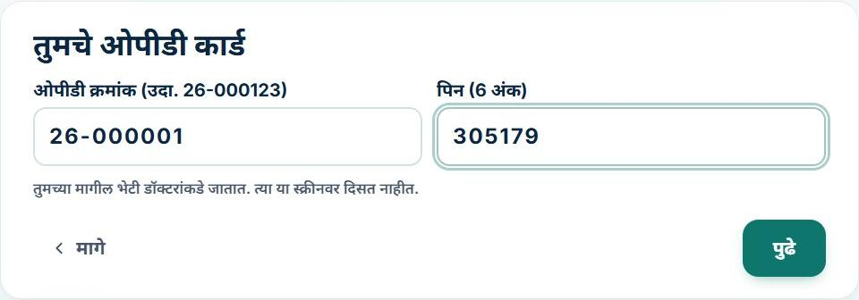
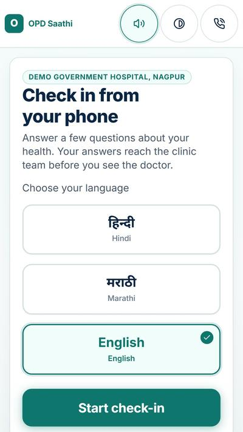
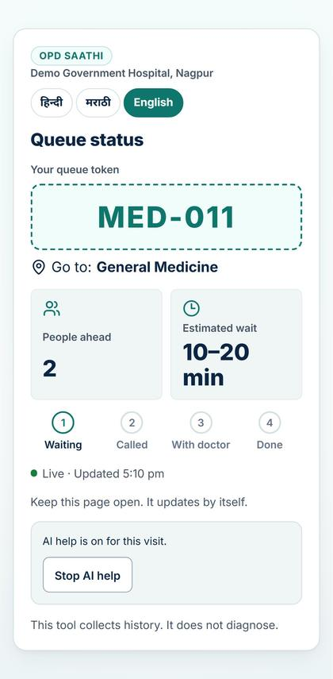
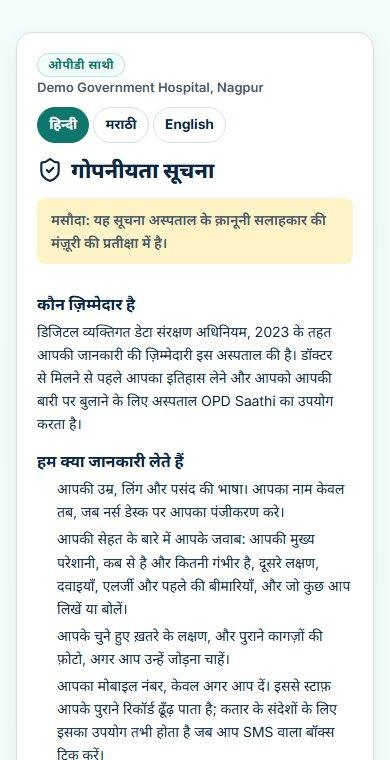
An administrator prints a Phone check-in QR (Settings → Kiosks). Patients answer the same interview with the same rules; staff see a Phone badge. "Replace QR" retires old posters; the hospital can switch it off.
From the QR on the token: the token, people ahead, a five-minute wait range (never a falsely exact time) and Waiting → Called → With doctor → Done. The phone vibrates when called. No name or health details appear.
What is collected, why, who sees it, how long it is kept, the patient's rights and where to complain, in three languages, with the hospital's grievance officer and a printable poster. AI help and SMS can be stopped from the phone.
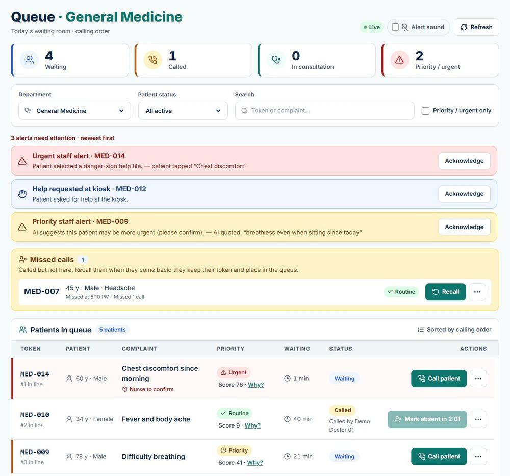
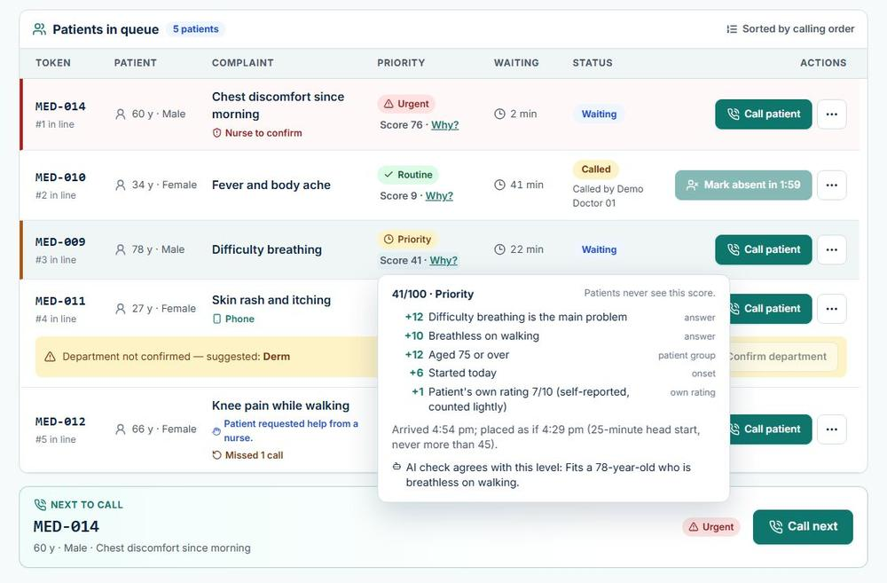
Every visit for today, 7 or 30 days, with status tiles, filters, search and "Open case sheet" — found in milliseconds even with years of visits.
A nurse checks in a patient who cannot use the kiosk; consent is still shown first and recorded as given at the desk, then the same interview, rules and queue follow.
Search by OPD number or phone, confirm in person, then link; re-issue a lost card with a new PIN (page 6).
Left: today's patients. Right: one patient in tabs — Overview · Patient history · Previous visits · Old papers · Ayurveda · Interview transcript · Clinical notes — so urgent warnings and the AI draft to check come first and the details are one click away.
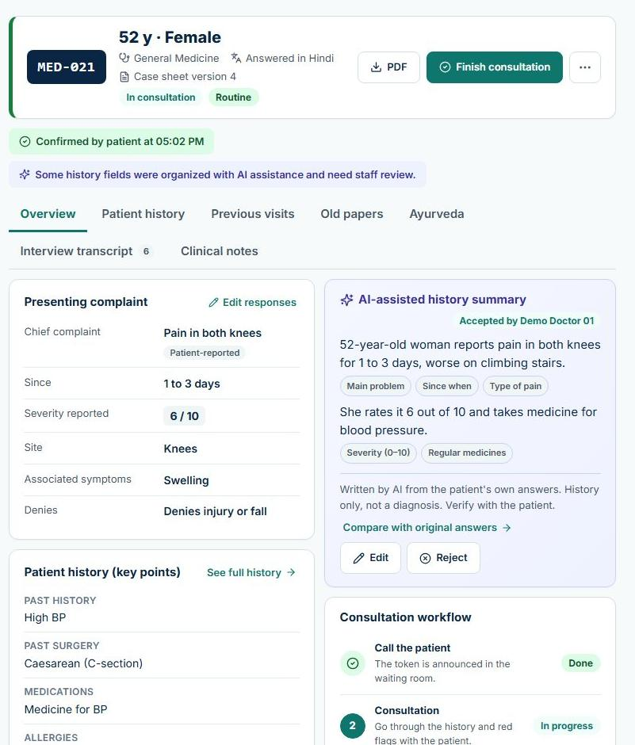
Token, age and sex, department, language, case-sheet version, status, priority with Why?, and one main action that follows the visit (Call → Start → Finish), plus PDF. "Answered by a parent or guardian" when someone else gave the history.
Every field shows the English text, the patient's own words and how they gave it (tap, voice with confidence, typed). Edits create versions marked Staff-verified; two people editing at once cannot overwrite each other. The transcript of every question and answer cannot be changed.
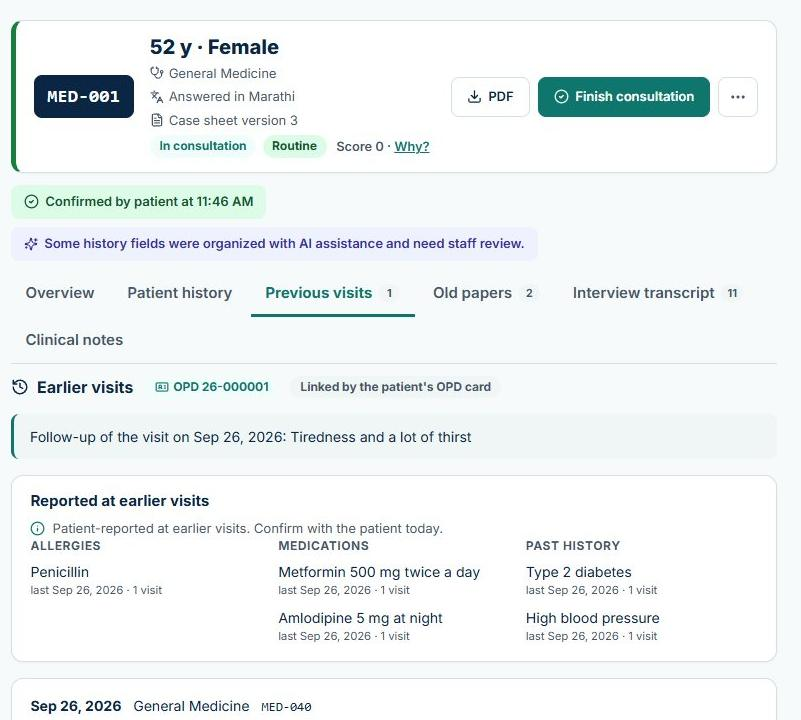
Up to 20 earlier visits at the same hospital: date, department, complaint, red flags and the reviewed AI brief, plus allergies, medicines and conditions with the date each was last reported — labelled "patient-reported, confirm today". Doctors and nurses see it only while the patient is under their department's care today.
Every change to the visit, who made it and when: token issued, called, marked absent, recalled, consultation started. The application can add lines but never change or delete them.
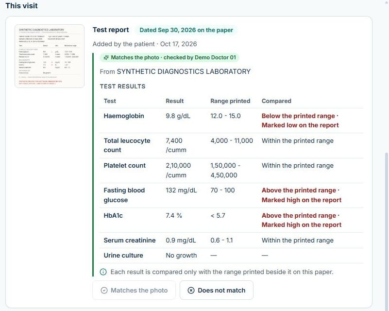
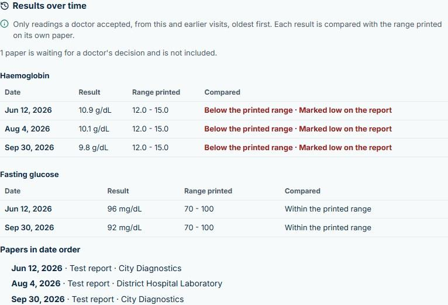
Only readings a doctor accepted, from this and earlier visits, one table per test, each result next to the range printed on its own paper. A trend that would take minutes to find in a pile of papers is one glance.
A visit can be exported as a FHIR R4 bundle (patient, encounter, complaint and conditions as unconfirmed, allergies, medicines as stated, accepted results, the interview, consents and who answered) through the API, for connecting to a hospital system. It is marked "not ABDM-certified".
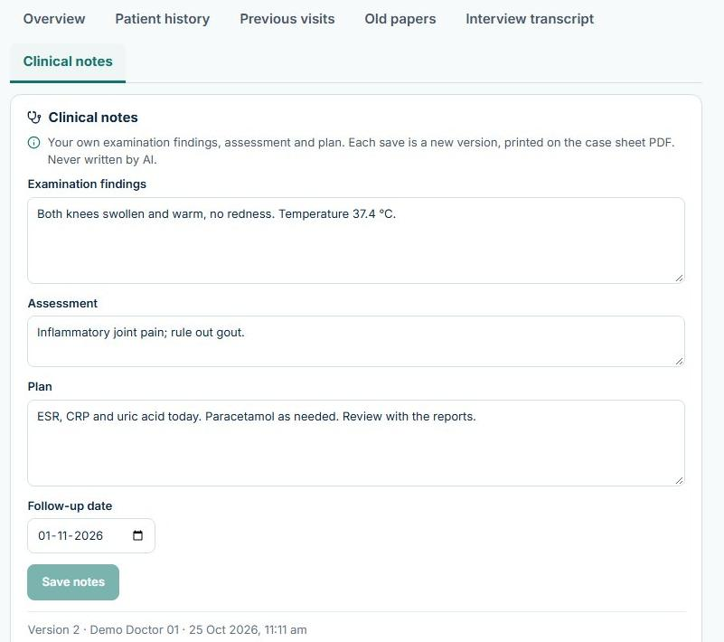
PDF / Print always gives the full history-only case sheet in three scripts, with the reviewed AI summary, open questions and Ayurveda findings. A whole visit — call, start, accept the draft, write notes, finish, print — takes 6 clicks and one key.
One web app serves every screen. In the demo the addresses start with http://localhost:8080; staff sign in at /staff and see only their role's pages.
| Screen | Who | Address | What it shows and does |
|---|---|---|---|
| Kiosk check-in | Patients | /kiosk | The interview from language to token (page 4); paired once with an activation code. |
| Phone check-in | Patients, from the poster | /m/<code> | The same interview on the patient's own phone. |
| Live status | Patients, from the token QR | /s/<token> | Place in line, wait range, called; stop AI help or SMS. |
| Privacy notice | Anyone | /privacy/<hospital> | What is collected and why, the patient's rights, the grievance officer. |
| Queue | Nurse, doctor, admin | /staff/queue | The live waiting room: counters, alerts, calling order, Call next, missed calls. |
| Consultations | Doctor, admin | /staff/consultations | Today's patients and the case sheet: AI draft, history, previous visits, papers, transcript, notes, PDF. |
| Patients | Nurse, doctor, admin | /staff/patients | Register of visits, assisted check-in, finding returning patients, re-issuing cards. |
| Reports | Admin | /staff/reports | The dashboard: visits, waits, consultations, urgency, accuracy, languages, departments, CSV. |
| Settings | Admin | /staff/settings | Staff accounts, kiosks and phone QRs, departments, hospital switches. |
| Audit log | Admin | /staff/audit | Who did what, when, to which record; search and export. |
| System | Admin | /staff/system | Health of the database, queue store, worker, backups, certificate, AI, voice and each kiosk. |
| My account | Everyone | /staff/account | Password, two-step sign-in, own sessions. |
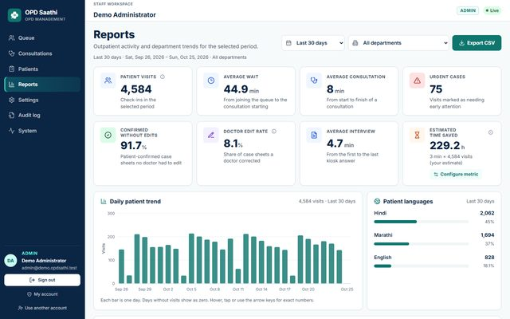
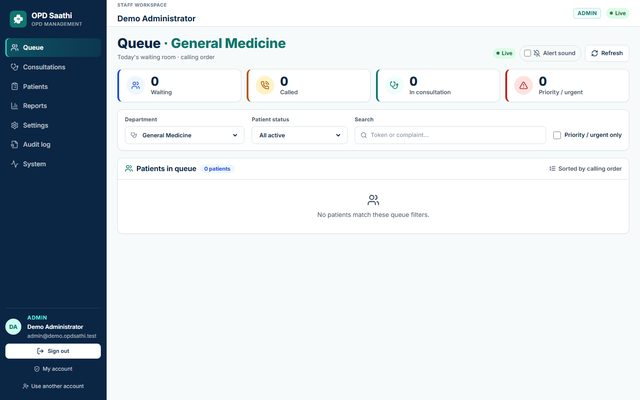
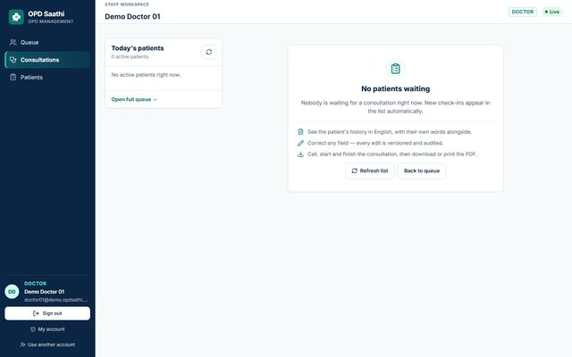
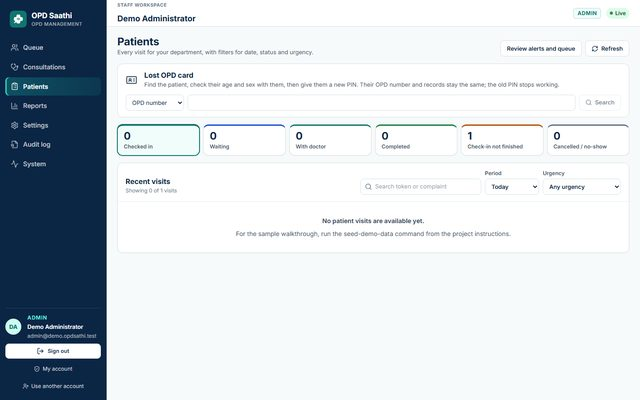
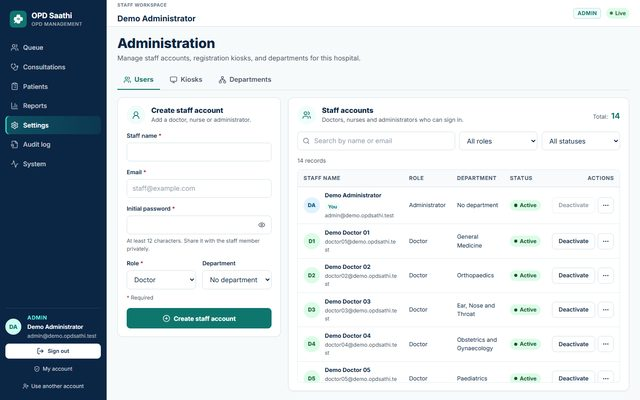
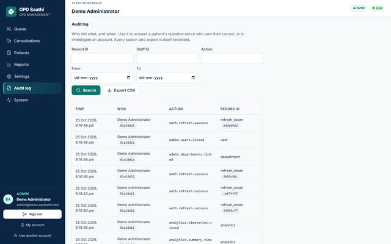
Today's demo, 25 October, with the new logo in the sidebar. Add ?demo=1 to any address for a presentation ribbon (kiosk) or a "How it works" panel (staff).
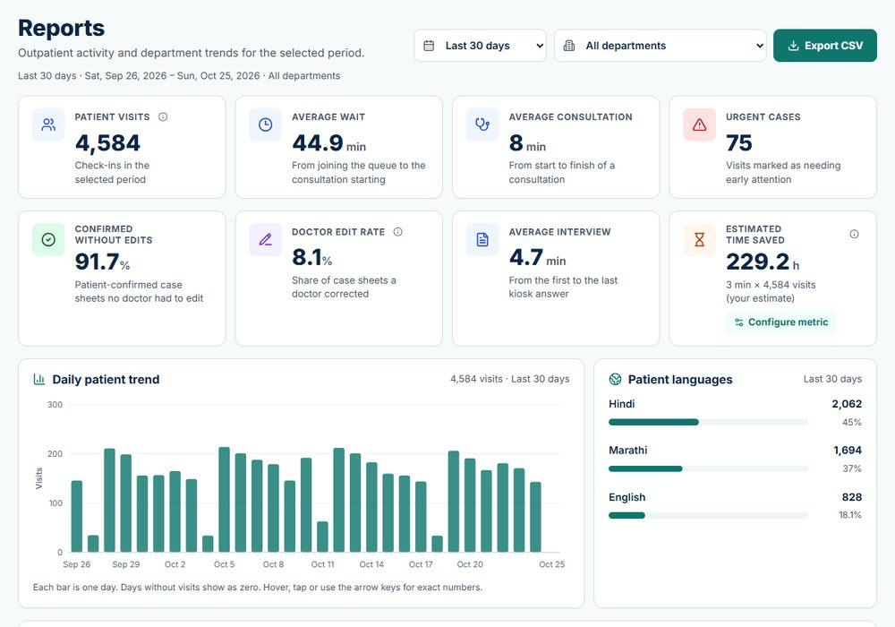
For today, 7, 30 or 90 days and any department: patient visits, average wait, average consultation, urgent cases, confirmed without edits (how often the kiosk history was right), doctor edit rate, average interview, and an estimated time saved (labelled, with minutes per visit set by the administrator). Daily trend, languages, department load and a CSV export protected against spreadsheet formulas. Every view is audited.
The figures come from one row per department and day. The worker recounts today and yesterday every 5 minutes (0.1–0.2 s at a million visits) and every day at 03:07, so a late change to an older visit shows by the next morning. Before 25 October the whole history was recounted every 5 minutes (10 s at a million visits).
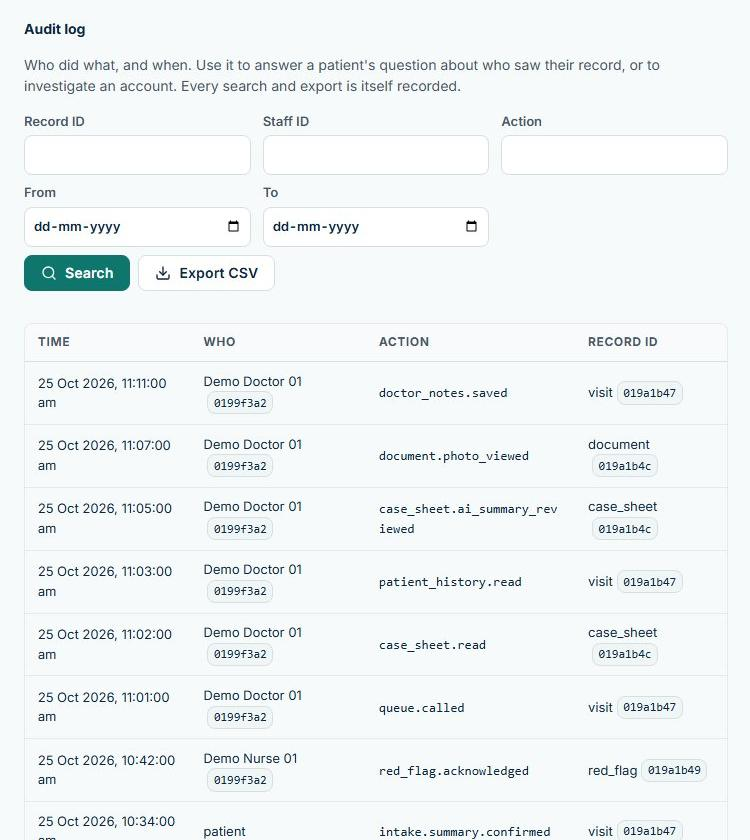
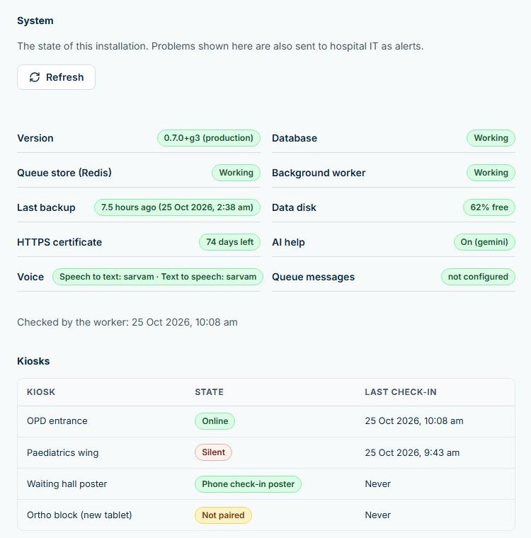
AI needs three yeses: the server has a key, the hospital has switched it on, and the patient agreed. Without any of them, every core feature still works on the hospital's server.
| Feature | With AI (Gemini; Sarvam for Indian voices) | Without AI, or when the patient says no |
|---|---|---|
| English case sheet | Free text translated; a short doctor's brief whose every sentence cites its answers, for the doctor to accept, edit or reject | Tapped answers translated from the bilingual question bank; free text stays in the patient's words |
| Questions | Up to three follow-ups written for this complaint, in three languages, labelled "AI follow-up" | The fixed, logical question flow (page 5) |
| Voice | Server speech recognition (Sarvam, then Gemini) and natural voices | Recorded question audio and the device's own voice; tapping and typing |
| Old papers | Each photo read as a draft for the doctor to compare | The photo is kept unread for the doctor to read |
| Safety | Rules, plus an AI second opinion that can only raise urgency and must quote the patient | The rules engine (15 draft rules) and danger tiles |
| Routing, queue, tokens, reports | Always rule-based and the same with or without AI | |
A hospital can start with no AI cost and no data leaving the building, and switch AI on only when its contract and its patients allow. Safety never depends on AI being right: rules decide, AI only adds caution, people confirm. A patient who said yes can withdraw from their own phone; from then on nothing more about the visit goes to AI services.
In today's demo check, Gemini (gemini-3.5-flash-lite) answered in 2.4 s and the Sarvam voice in 0.8 s.
| Layer | Technology |
|---|---|
| Web app | React 19 and TypeScript 5.9, Vite 7, React Router 7, TanStack Query, Zustand, Tailwind CSS 4, i18next (Hindi, Marathi, English), lucide icons, an installable PWA with an encrypted offline form, virtualised lists for very long queues |
| API | Python 3.12, FastAPI, Pydantic, SQLAlchemy (async) with asyncpg, Gunicorn and Uvicorn workers, WebSockets and server-sent events for live updates, WeasyPrint for PDF case sheets, structlog, PyJWT, Argon2, pyotp (two-step sign-in), the Google Gen AI SDK |
| Data | PostgreSQL 16 with row-level security and Alembic migrations (35 so far); Redis 7 for queue state and a separate cache; ARQ for background jobs; AES-GCM field encryption with rotatable keys |
| AI and voice | Google Gemini (summaries, translation, follow-ups, reading papers, a red-flag second opinion); Sarvam (Indian-language speech recognition and voices); the browser's own voices as a fallback |
| Running it | Docker Compose with a production overlay (TLS in nginx, secrets as files, non-root containers), pgBackRest, Prometheus and Alertmanager; images pinned by digest, signed with cosign, with a component list |
| Quality gates | GitHub Actions on every change: backend, frontend, production smoke test with browser tests against the real API, image scans and security — all must pass before code reaches main; nightly load (k6), real installation, upgrade, failure drills, OWASP ZAP and Schemathesis |
| Tests | pytest with Hypothesis, Vitest with a coverage gate, Playwright with axe accessibility scans at seven screen widths and three languages |
docs/DECISIONS.md.on real PostgreSQL and Redis (3 skipped), 25 October; migrations run up, down and up
kiosk, phone and staff screens; ten full runs in a row with no retry
with a coverage gate that can only go up
on the last change (#74): backend, frontend, security, images, smoke, install, upgrade, load
| Check | Result |
|---|---|
| Red flags that must be caught (held-out set) | 60 / 60 |
| Negations not falsely flagged ("no chest pain") | 50 / 50 |
| Department routing (held-out set) | 96 / 96 |
| History extraction with zero invented fields | 100 / 100 |
| Adversarial prompts blocked by the AI output guard | 100 / 100 |
| Urgency never decreases when a warning sign is added | 500 / 500 |
| Golden interviews completed correctly (three languages) | 30 / 30 |
Six services healthy; the web app and API answer; the database at the latest migration (0035); Gemini answered in 2.4 s and Sarvam in 0.8 s; the returning patient and her old report ready — "Ready for the demo". Every staff screen opened under an administrator and a doctor account.
From an empty repository on 5 October to a pilot-ready system on 25 October: 26 pull requests merged, and since 10 October every change has reached main through a pull request that passed CI.
| When | What was built |
|---|---|
| 5–7 October Build phases 0–14 | Project set-up; staff sign-in and roles; the data model with each hospital walled off; the kiosk interview and question bank in three languages; tokens, the queue and the live status page; danger signs, red-flag rules and department routing; nurse, doctor and administrator screens with the PDF case sheet; voice answers (Sarvam); Gemini with safety guard-rails; the read-back with voices; queue messages; the Reports dashboard; the offline kiosk form; security hardening; a demo mode and faster loading. |
| 10–11 October Pull requests #6–#10 | Back and quit on the kiosk and fixes to the question logic; staff screen layout; data quality in reports; kiosk activation, replacement and deletion; hospital set-up; staff sessions and alerts. |
| 16–17 October IIT Bombay readiness, #11–#16 | Phone check-in on the hospital Wi-Fi; the OPD card, returning patients and previous visits; the fair queue (missed calls, recall, one patient per doctor, abuse limits); AI summaries with sources; old papers read as drafts; consent by purpose; demo data and rehearsal tools; the Phase 7 plan and the 83-page documentation. |
| 23 October Phase 7 G0, G1, G2: #17, #18, #35 | G0 fixes found by a code review (SMS only by the patient's tick, worker keys). G1 secure build: HTTPS, two-step sign-in, staff account tools, the audit log screen, key rotation, security scans. G2 operable: 19 alerts, backups with restore drills, the System page, load tests, signed releases, the paper fallback pack. |
| 24–25 October Phase 7 G3: #59, with dependencies #36, #48, #60 | Pilot-ready engineering: the doctor's own notes, review of systems, results over time, lost OPD card, the AI switch, who is answering, the privacy notice, FHIR export, the million-visit index review, ten clean browser runs in a row; React 19 and dependency updates tested together; the first release, v0.7.0 (24 October). |
| 25 October #72, #73, #74 | The team's feature guide; the OPD Saathi logo (a plus that speaks, with a voice wave: care, conversation, voice) in the tab, home screen, loading screen, staff sidebar and kiosk; reports counted per day. |
Kiosk interview, voice, three languages, danger signs, red-flag rules, routing, triage, live queue, status page, case sheet, PDF, reports, offline form, AI with guard-rails.
Phone check-in, OPD card, previous visits, fair queue rules, AI with sources, old papers, consent by purpose.
Security, operations and the G3 features: notes, review of systems, results over time, privacy notice, audit log and System screens, the logo and per-day reports.
.\start-demo.ps1 -WebPort 8080. The first run builds the images (several minutes). It migrates the database, prepares the demo hospital, 30 days of history and the returning patient, prints the links and accounts, and opens the kiosk..\scripts\demo-check.ps1 — services, web and API, database, a live AI and voice request, demo patients. It ends with "Ready for the demo"..\scripts\lan-check.ps1 when phones on the same Wi-Fi cannot open the QR.docker compose down (the data is kept).admin@demo.opdsathi.test; password in .env as DEMO_ADMIN_PASSWORD.doctor01–doctor08@demo.opdsathi.test, one per department (doctor01 is General Medicine); nurses nurse01–nurse05; password DEMO_STAFF_PASSWORD.26-000001 / 305179); at the kiosk answer age 52, Female, then "Yes, I have my OPD card". Her old test report to photograph: docs/demo-papers/synthetic-lab-report.png.?demo=1 to the kiosk or staff address.docs/DEMO.md)| Time | Screen | Do, and the point it makes |
|---|---|---|
| 0:00 | Kiosk | Choose मराठी; agree to the care notice; say yes to AI help — a separate, optional choice. |
| 0:55 | Kiosk | Age 52, Female; "Yes, I have my OPD card" with the number and PIN; "the same problem" — her record is linked but never shown on the kiosk. |
| 1:40 | Kiosk | Safety screen "No, none of these" — danger signs come first. |
| 1:55 | Kiosk | Answer by tapping, and once by Tap and speak in Marathi; on Review hear the read-back and photograph the old test report; confirm. |
| 4:00 | Kiosk + phone | Token, department and QR; scan it: the live status page with "Stop AI help". |
| 4:30 | Nurse (Queue) | Her token, English complaint and wait time, urgency first. |
| 5:00 | Doctor | Call, Start; the AI brief with source chips; Accept. Previous visits; Old papers with the printed-range flags; Matches the photo; Finish; PDF. |
| 8:00 | Admin | Reports (30 days of history); Settings → Kiosks → Show QR for phone check-in. |
A new check-in; on the safety screen tap Chest discomfort. The nurse's board shows an urgent alert at once; after confirmation the patient is first in line, marked "Nurse to confirm".
Real SMS (it is off; patients see the token on screen and on their phone), ABHA/ABDM integration, or any diagnosis. If AI fails, say so at the AI step: every step has a fallback.
| Term | Meaning |
|---|---|
| Token | The patient's number for the day: department prefix and counter (MED-016 = the 16th General Medicine patient today). |
| OPD card | OPD number (for example 26-000001) and a six-digit PIN on the token slip; links the next visit to this one. The PIN is never stored. |
| Danger tile, red flag | A danger tile is one of six safety buttons on the kiosk; a red flag is a warning raised by a safety rule (or an AI second opinion) from what the patient said. Neither is a diagnosis. |
| Triage score, head start | A 0–100, staff-only score; each point places the patient 0.6 minutes earlier than their arrival, at most 45 minutes. Urgent patients go first. |
| Grace period, recall | The minutes after a call before staff may mark a patient absent; a recall puts them back on their original arrival time. |
| AI draft, sources | The AI's summary for the doctor, each sentence linked to the answers it rests on; the doctor accepts, edits or rejects it. |
| Printed range | The normal range printed beside a result on the patient's own paper — the only range results are compared with. |
| Consent purpose | Care (required), online AI help and SMS (optional), each with its own notice and record, each withdrawable. |
| Case sheet, transcript | The organised English history for the doctor, and the unchangeable record of every question and answer. |
| Activation code, check-in QR | A one-time, 24-hour code that pairs a kiosk; a printed QR that opens phone check-in and can be replaced at any time. |
| Row-level security | A database feature that makes each hospital's rows invisible to every other hospital. |
| FHIR | The international standard format for exchanging health records; OPD Saathi exports a visit as a FHIR R4 bundle. |
docs/DEMO.md (demo script) · docs/DEPLOYMENT.md (installing in a hospital) · docs/ARCHITECTURE.md · docs/SAFETY.md and docs/CLINICAL_SAFETY.md · docs/PRIVACY.md · docs/THREAT_MODEL.md · docs/EVALUATION.md · docs/SCALING.md · docs/LIMITATIONS.md · docs/DECISIONS.md (ADRs) · CHANGELOG.md.